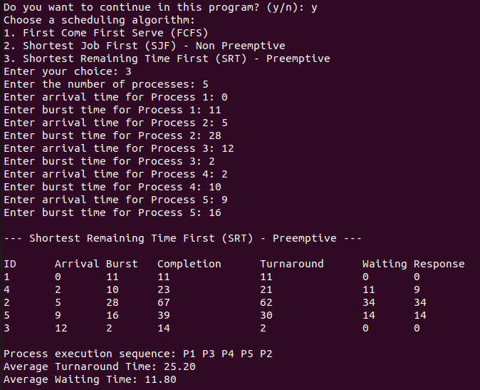

Overview
Shortest Remaining Time First (SRTF), also known as Preemptive Shortest Job First, is a preemptive version of the Shortest Job First (SJF) scheduling algorithm. Here's an overview of how it works:
How It Works
- Order of Execution: In SRTF, the process with the shortest remaining burst time is given priority. This means that the currently executing process can be preempted if a new process arrives with a shorter remaining burst time.
- Preemptive Nature: Unlike non-preemptive SJF, SRTF allows a running process to be interrupted if another process with a shorter burst time arrives. This ensures that the process with the shortest remaining time is always executed next.
- Dynamic Scheduling: SRTF continuously checks the remaining burst times of all processes to decide which process to execute next. This makes it more responsive to new process arrivals compared to non-preemptive SJF.
Advantages
- Minimized Average Waiting Time: By always running the process with the shortest remaining burst time, SRTF can minimize the average waiting time for all processes.
- Efficiency: It is highly efficient in time-sharing systems where process lengths can be dynamically adjusted.
Disadvantages
- High Overhead: Frequent context switching due to preemption can lead to high overhead, reducing overall system efficiency.
- Starvation: Long processes may suffer from indefinite delays if shorter processes keep arriving, leading to starvation.
SRTF Code
#include <stdio.h>
#include <limits.h>
#define MAX_PROCESSES 10
typedef struct {
int id;
int arrival_time;
int burst_time;
int remaining_time;
int completion_time;
int waiting_time;
int turnaround_time;
int response_time;
int started;
} Process;
void sort_by_arrival_time(Process processes[], int n) {
Process temp;
for (int i = 0; i < n - 1; i++) {
for (int j = 0; j < n - i - 1; j++) {
if (processes[j].arrival_time > processes[j + 1].arrival_time) {
temp = processes[j];
processes[j] = processes[j + 1];
processes[j + 1] = temp;
}
}
}
}
void srt_preemptive(Process processes[], int n) {
printf("\n--- Shortest Remaining Time First (SRT) - Preemptive ---\n");
int completed = 0, current_time = 0, min_index;
int min_remaining_time = INT_MAX;
while (completed != n) {
min_index = -1;
min_remaining_time = INT_MAX;
for (int i = 0; i < n; i++) {
if (processes[i].arrival_time <= current_time && processes[i].remaining_time > 0 && processes[i].remaining_time < min_remaining_time) {
min_remaining_time = processes[i].remaining_time;
min_index = i;
}
}
if (min_index != -1) {
if (processes[min_index].remaining_time == processes[min_index].burst_time) {
processes[min_index].response_time = current_time - processes[min_index].arrival_time;
}
current_time++;
processes[min_index].remaining_time--;
if (processes[min_index].remaining_time == 0) {
processes[min_index].completion_time = current_time;
processes[min_index].turnaround_time = processes[min_index].completion_time - processes[min_index].arrival_time;
processes[min_index].waiting_time = processes[min_index].turnaround_time - processes[min_index].burst_time;
completed++;
}
} else {
current_time++;
}
}
print_processes(processes, n);
}
void calculate_averages(Process processes[], int n) {
float total_turnaround_time = 0, total_waiting_time = 0;
Process temp;
// Sort processes by completion time
for (int i = 0; i < n - 1; i++) {
for (int j = 0; j < n - i - 1; j++) {
if (processes[j].completion_time > processes[j + 1].completion_time) {
temp = processes[j];
processes[j] = processes[j + 1];
processes[j + 1] = temp;
}
}
}
// Print the process execution sequence
printf("\nProcess execution sequence: ");
for (int i = 0; i < n; i++) {
printf("P%d ", processes[i].id);
total_turnaround_time += processes[i].turnaround_time;
total_waiting_time += processes[i].waiting_time;
}
printf("\nAverage Turnaround Time: %.2f\n", total_turnaround_time / n);
printf("Average Waiting Time: %.2f\n", total_waiting_time / n);
// Comment on the best algorithm
if (n > 0) {
printf("\nComment: ");
if (total_waiting_time / n <= total_turnaround_time / n) {
printf("Shortest Remaining Time (SRT) - Preemptive scheduling tends to give the best average waiting time in most cases.\n");
} else {
printf("First Come First Serve (FCFS) or Shortest Job First (SJF) - Non Preemptive may be preferred for simple tasks with minimal interruptions.\n");
}
}
}
void print_processes(Process processes[], int n) {
printf("\nID\tArrival\tBurst\tCompletion\tTurnaround\tWaiting\tResponse\n");
for (int i = 0; i < n; i++) {
printf("%d\t%d\t%d\t%d\t\t%d\t\t%d\t%d\n",
processes[i].id,
processes[i].arrival_time,
processes[i].burst_time,
processes[i].completion_time,
processes[i].turnaround_time,
processes[i].waiting_time,
processes[i].response_time);
}
}
int main() {
Process processes[MAX_PROCESSES];
int n, choice;
// Menu to select scheduling algorithm
printf("Choose a scheduling algorithm:\n");
printf("1. Shortest Remaining Time First (SRT) - Preemptive\n");
printf("Enter your choice: ");
scanf("%d", &choice);
// Initial process setup
printf("Enter the number of processes: ");
scanf("%d", &n);
char continue_program;
for (int i = 0; i < n; i++) {
processes[i].id = i + 1;
printf("Enter arrival time for Process %d: ", processes[i].id);
scanf("%d", &processes[i].arrival_time);
printf("Enter burst time for Process %d: ", processes[i].id);
scanf("%d", &processes[i].burst_time);
processes[i].remaining_time = processes[i].burst_time;
processes[i].started = 0;
}
switch (choice) {
case 1:
sort_by_arrival_time(processes, n);
srt_preemptive(processes, n);
break;
default:
printf("Invalid choice. Exiting program.\n");
return 1;
}
calculate_averages(processes, n);
// Ask the user if they want to continue
printf("Do you want to continue in this program? (y/n): ");
scanf(" %c", &continue_program);
if (continue_program == 'y' || continue_program == 'Y') {
main(); // Restart the program
} else {
printf("Exiting program.\n");
}
return 0;
}
Sample Input
Processes: 1, 2, 3, 4, 5
Arrivat Times: 0, 5, 12, 2, 9
Burst Times: 11, 28, 2, 10, 16
Sample Output
